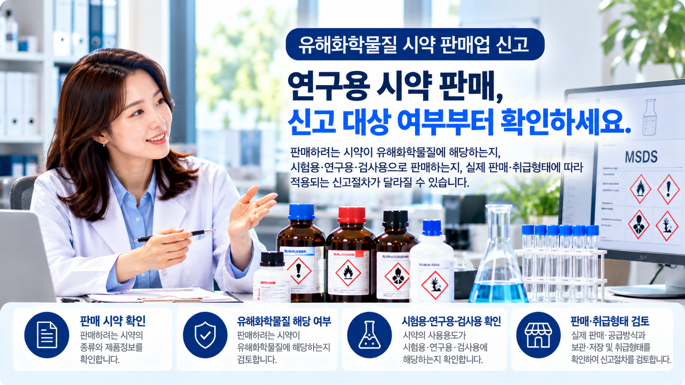

01. 먼저 판매하려는 시약을 확인합니다
첫 단계는 어떤 시약을 판매할 것인지 구체적으로 확인하는 것입니다.
같은 시약이라는 명칭을 사용하더라도 제품의 성분이나 함량 등이 다를 수 있으므로 실제 판매제품을 기준으로 검토하는 것이 중요합니다.
- 판매하려는 시약의 제품명
- 성분 및 물질정보
- 제품 관련 자료
- 유해화학물질 해당 여부
02. 유해화학물질 해당 여부를 확인합니다
판매하려는 제품이 정해졌다면 해당 시약의 물질정보를 기준으로 유해화학물질에 해당하는지 확인하는 과정이 필요합니다.
제품명만 보고 판단하기보다는 제품의 성분과 함량 등 확인 가능한 자료를 함께 살펴보는 것이 좋습니다.
03. 어떤 용도로 판매하는지도 중요합니다
시약 판매업 신고를 검토할 때는 물질 자체뿐 아니라 해당 제품이 어떤 목적으로 판매·공급되는지도 함께 확인해야 합니다.
특히 시험용·연구용·검사용으로 공급되는 시약인지 확인하여 실제 사업형태에 적용되는 절차를 검토해야 합니다.
04. 판매·공급 및 취급형태를 확인합니다
| 확인사항 | 주요 내용 |
|---|---|
| 판매방식 | 어떤 방식으로 판매하는지 |
| 공급방식 | 거래처에 어떻게 공급하는지 |
| 보관·저장 | 사업장에서 직접 보관·저장하는지 |
| 취급형태 | 실제로 어떤 방식으로 취급하는지 |
직접 보관하지 않는 판매형태라고 하더라도 실제 판매·공급 및 취급방식을 기준으로 적용되는 절차를 확인하는 것이 좋습니다.
05. 제품 관련 자료도 함께 확인합니다
신고 대상 여부를 검토하려면 판매하려는 제품의 성분과 물질정보를 확인할 수 있는 자료가 도움이 됩니다.
따라서 현재 확보하고 있는 제품정보와 관련 자료를 먼저 정리해 두면 상담 및 신고 검토가 보다 원활해집니다.
06. 신고 검토는 이런 순서로 진행됩니다
07. 상담 전에 무엇을 준비하면 좋을까요?
처음부터 모든 자료를 완벽하게 준비하실 필요는 없습니다. 현재 확인 가능한 범위에서 다음 사항을 알려주시면 검토에 도움이 됩니다.
- 판매하려는 시약 또는 제품명
- 제품의 성분을 확인할 수 있는 자료
- 시험·연구·검사 등 판매용도
- 판매 및 공급방식
- 직접 보관·저장 여부
08. 신고 전 유의사항
시약이라는 명칭만으로 신고대상 여부를 단정하기는 어렵습니다.
판매하려는 물질의 특성과 사용용도, 실제 영업 및 취급형태를 함께 확인한 뒤 적용되는 절차를 검토하는 것이 중요합니다.
※ 실제 적용 여부와 준비사항은 취급물질 및 사업형태에 따라 달라질 수 있으므로 개별 확인이 필요합니다.
시약 판매업 신고 대상인지 궁금하신가요?
간단한 자가진단을 이용하거나 판매하려는 제품정보를 기준으로 상담을 신청해 보세요.